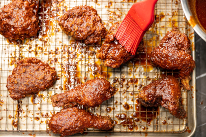

Return to homepage
Nashville Style Fried Chicken

Delicious Nashville Style Fried Chicken
Prep Time: 30m | Cook Time: 30m | Additonal Time: 1d | Total Time: 1d 1hr
Ingredients
1 tbsp chipotle chile powder
1 cup hot sauce (Tabasco or Frank's)
8 chicken thighs or 4 lbs (with bone and skin on)
5 ½ cups all-purpose flour, divided
4 tbsp cayenne pepper, divided
2 cup full-fat buttermilk
1 cup hotsauce (Tabasco or Frank's)
Vegetable oil, for frying
1 tsp chipotle chile powder
Instructions
MARINADE: Whisk marinade ingredients together in a small bowl. Place the chicken in a zipper-top bag and pour the marinade over the chicken. Seal the bag and rub to coat the chicken. (Double bag if the marinade aroma is strong.) Refrigerate 12 hours or overnight.
BATTER: You'll need three bowls. In one bowl, combine 1 ½ cups flour, 2 tablespoons cayenne pepper and 2 teaspoons salt. In the second bowl, combine remaining 4 cups flour, 2 tablespoons cayenne pepper, 2 teaspoons salt, paprika and garlic powder. In the third bowl, whisk together buttermilk and hot sauce.
FRY: Remove the chicken from the marinade and pat with paper towels to remove excess marinade. Discard the marinade.
In a deep fryer or large, deep cast iron pot, heat at least 3 inches of vegetable oil to 335 degrees. Set a wire rack over a rimmed baking sheet. Depending on the size of your deep fryer or pot, you may need to fry in batches. If so, preheat oven to 175 degrees.
Dredge each thigh in the first flour combination, then dip in the buttermilk mixture, then into the second flour combination.
Carefully and slowly, place the chicken pieces in the hot oil. (You want to immerse the chicken slowly so it does not stick to anything.) Fry for 16 to 18 minutes or until deep golden brown and a thermometer inserted into the center registers 165 to 170 degrees. Place chicken on the wire rack and place in the oven to keep warm if working in batches.
HOT SAUCE: Whisk together brown sugar, cayenne pepper, smoked paprika and chipotle chile powder in a heat-proof bowl. When chicken is cooked through, turn the heat off the oil and allow any particles to settle to the bottom for a few minutes. Then ladle out ¾ cup of the frying oil in the small heatproof bowl with the spices and whisk together. Immediately before serving, brush each piece with the sauce. Stir to keep the spices from falling to the bottom of the bowl.
Serve with slices of dill pickle and enjoy!